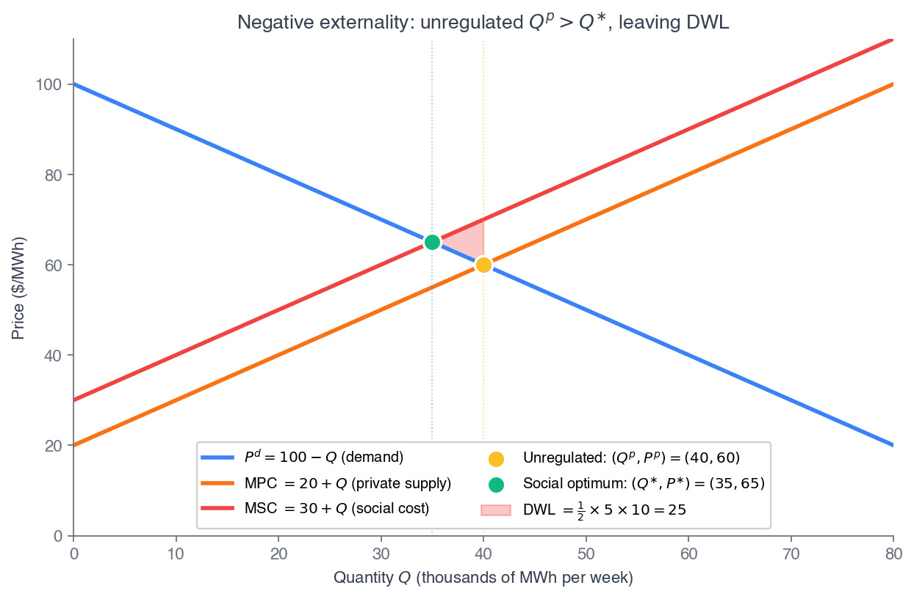
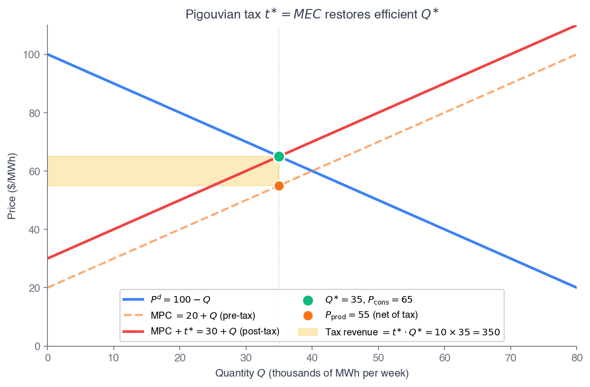
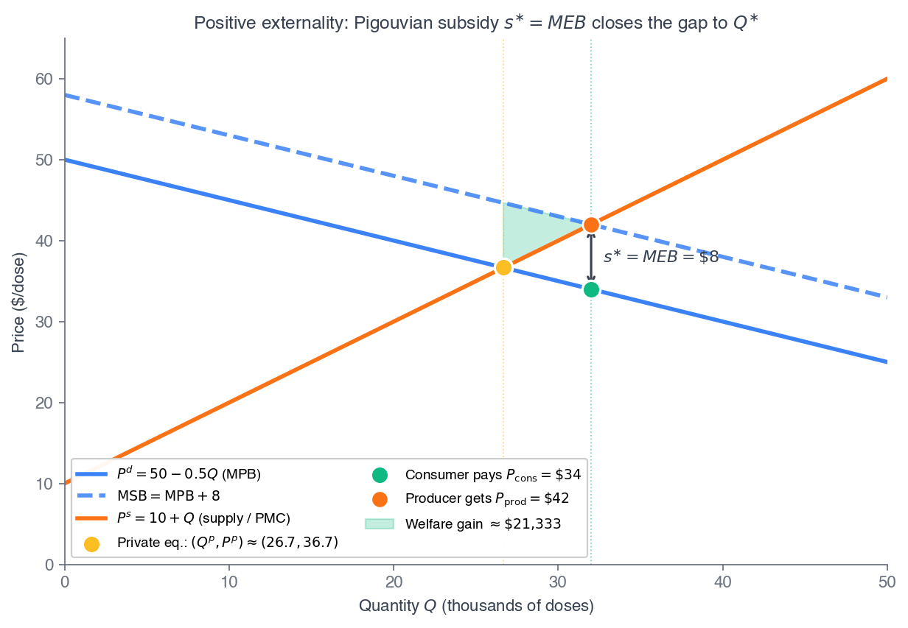
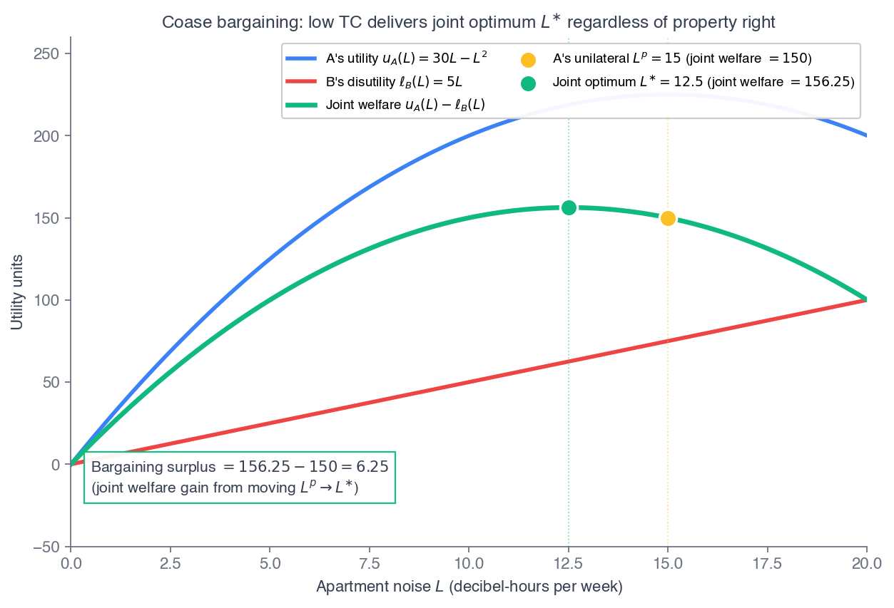
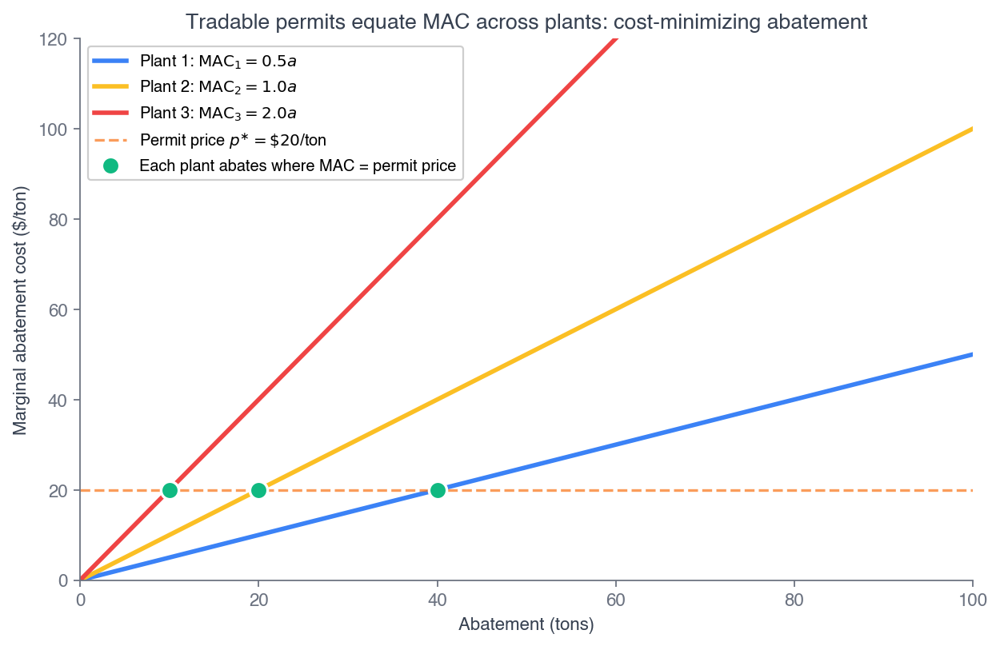
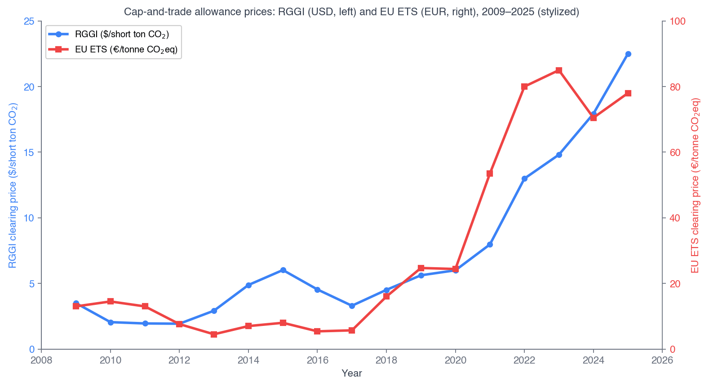
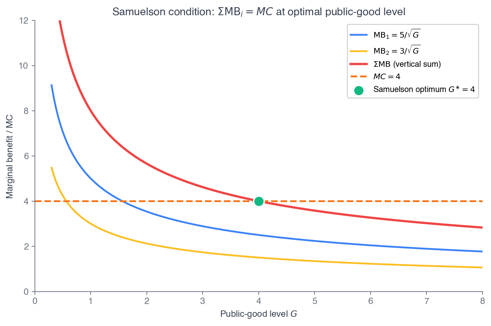
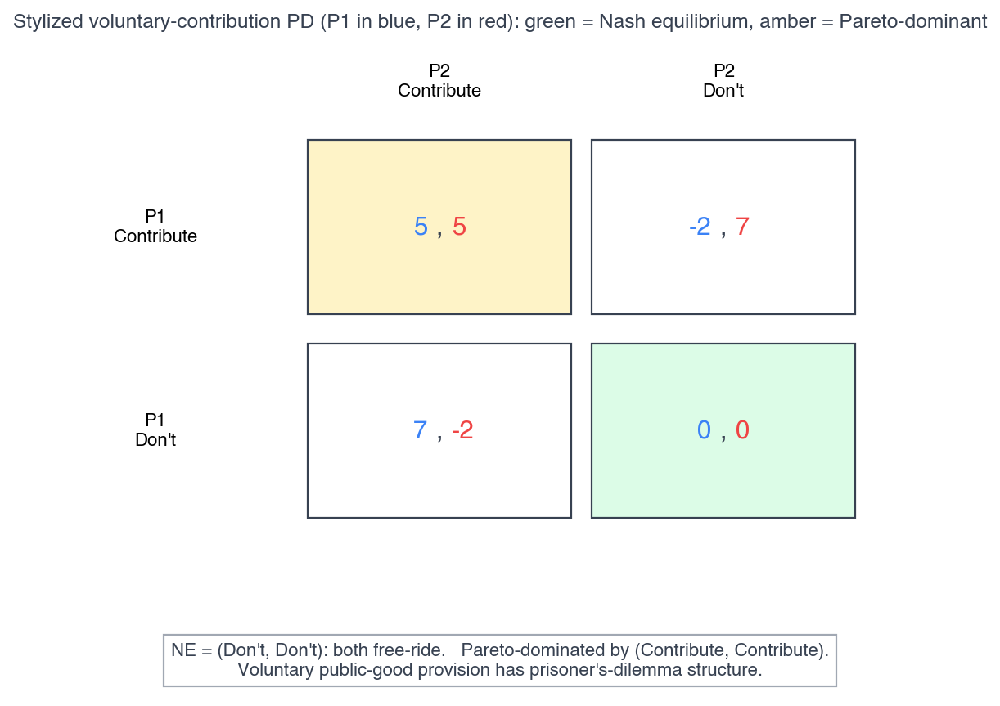

Click anywhere (or press Esc) to close
ECON 2316 • Microeconomic Theory • Chapter 17
When one party's choice spills onto a third party, the market price misses the full cost — and Chapter 10's welfare theorem breaks. Pigou, Coase, and Samuelson are the three ways to fix it.
Dr. Richeng Piao
Department of Economics
Northeastern University
By the end of class today, you will be able to…
1
Classify externalities on the positive–negative × production–consumption matrix and locate the wedge \(SMC = PMC + MEC\). (Bloom L4)
2
Compute the Pigouvian tax \(t^{\ast}=MEC(Q^{\ast})\) (and subsidy \(s^{\ast}=MEB\)) that restores the social optimum. (Bloom L4)
3
State and apply the Coase theorem — and diagnose which of its three heroic conditions fails in real markets. (Bloom L5)
4
Derive the Samuelson condition \(\sum_i MRS_i = MRT\) and quantify the free-rider underprovision wedge. (Bloom L5 — central result)
5
Read real policy — congestion pricing, carbon markets, open-source software — through the three-repairs framework. (Bloom L4)
Chapter 16 — what broke it
Chapter 17 — the spillover
Three failures, three repairs, three economists. Negative externalities → Pigou (1920) tax the spillover. Reciprocal externalities with few parties → Coase (1960) assign rights and let them bargain. Non-rival, non-excludable goods → Samuelson (1954) and the vertical sum. Today we build all three.
On January 5, 2025, NYC became the first U.S. city to charge a peak toll — \$9 — to drive into Manhattan below 60th Street. One year in: 27 million fewer entries (−11%), peak speeds up 23% (Holland Tunnel +51%), transit ridership +7.7%, PM2.5 inside the zone down 22%, \$550M+ net revenue unlocking \$15B in MTA bonds.
The MTA sold it as both a revenue tool and an internalization of the externality drivers impose on each other. These are not the same toll.
On the locked Ch 3 demand curve \(Q^d=300{,}000-5{,}000P\), the revenue-max toll is \$30 \((\varepsilon_D=-1)\). The \$9 toll sits deep in the inelastic zone \((\varepsilon_D=-0.176)\) — far below revenue-max, but plausibly near the \$5–\$15 Pigouvian rate.
\$9
peak passenger-car toll
27M
fewer entries (−11%)
+23%
peak speeds in the zone
−22%
PM2.5 inside the zone
The chapter exists to write down both formulas — the revenue-max toll and the Pigouvian toll — prove they are generically different, and decide which one \$9 is actually targeting. The federal government tried to rescind the program in Feb 2025; on March 3, 2026, Judge Liman ruled the termination “arbitrary, capricious, and contrary to law.”
§17.1
A cost or benefit on a third party, not reflected in the price
An externality is a cost or benefit imposed on a third party — someone outside the buyer–seller trade — that is not reflected in the market price. It lives in the gap between the price and the full social cost.
| Production | Consumption | |
|---|---|---|
| Negative | steel mill SO\(_2\) | loud music at 2 a.m. |
| Positive | R&D spillovers | vaccination |
Markets clear at \(PMB=PMC\); efficiency needs \(SMB=SMC\), where \(SMC=PMC+MEC\) and \(SMB=PMB+MEB\). The gap is the deadweight loss.
Heads Up 17.1 — not every cost is an externality
A high gas price is not an externality — it is a market price reflecting real production cost, and the buyer chose to pay it. The defining feature is that the cost (or benefit) falls on someone outside the market and is not in the price. A cigarette tax that captures health-system costs is internalizing an externality, not creating one; a traffic jam is one, because no driver pays the others for the time stolen.
With a negative production externality, social marginal cost lies above private marginal cost by the marginal external cost at every \(Q\):
\(SMC(Q) = PMC(Q) + MEC(Q)\)
The market produces where \(PMB=PMC\) — too much. The efficient \(Q^{\ast}\) sits where \(PMB=SMC\). The shaded triangle between the two, where \(SMC\) exceeds \(PMB\), is the deadweight loss of the unregulated market.
Symmetrically for a positive externality: \(SMB > PMB\), the market underproduces, and the DWL sits to the right of \(Q^p\).

\(SMC=PMC+MEC\). The market overshoots to \(Q^p\); the shaded triangle is the welfare loss.
§17.2
Make the polluter pay the marginal external cost — and the firm self-corrects
The planner maximizes welfare \(W(Q)=V(Q)-C(Q)-D(Q)\), where \(D\) is cumulative external damage. The FOC:
\(V'(Q^{\ast}) = C'(Q^{\ast}) + D'(Q^{\ast})\)
i.e. \(PMB = PMC + MEC = SMC\). The unregulated firm solves only \(V'(Q^p)=C'(Q^p)\) — it is missing \(D'\). Levy a tax \(t\), so the firm's effective cost is \(C'(Q)+t\). Set
\(t^{\ast} = D'(Q^{\ast}) = MEC(Q^{\ast})\)
and the firm's private FOC becomes the social FOC. It chooses \(Q^{\ast}\) on its own — the tax aligns, it does not punish.
Recall from Principles — 1116 §16.1–16.2
Principles drew it graphically: a polluting plant overproduces, and a tax shifts supply up to close the gap (§16.1); a vaccine underproduces, and a subsidy shifts demand up (§16.2). This chapter derives the same result from the planner's FOC — the geometry you built is the proof that it generalizes to any smooth \(V,C,D\).
Key idea: tax revenue \(t^{\ast}Q^{\ast}\) is not a fine — it is the dollar value of damage third parties would otherwise absorb uncompensated.
Problem. \(P^d=100-Q\), \(P^s=20+Q\) (thousand MWh/wk), constant \(MEC=10\). Find \((Q^p,P^p)\), the social optimum, \(t^{\ast}\), the DWL, and tax revenue.
1. Unregulated: \(100-Q=20+Q \Rightarrow Q^p=40\), \(P^p=\$60\).
2. Social optimum: \(100-Q=20+Q+10 \Rightarrow Q^{\ast}=35\). Consumers pay \(P^d(35)=\$65\); producers net \(65-10=\$55\).
3. Tax: \(t^{\ast}=MEC=\$10\). Shifted supply \(30+Q\); \(100-Q=30+Q \Rightarrow Q=35\) ✓.
4. DWL \(=\tfrac12(10)(40-35)=\$25\)k/wk. Revenue \(=10\times 35=\$350\)k/wk.

Check. At \(Q^{\ast}=35\): \(SMC=20+35+10=65=P^d(35)\) ✓. Surplus fully internalized — consumer 65, producer 55, government 10.
\(P^d=100-Q\), \(PMC=20+Q\). Blue = demand, green = private MC, orange = social MC \(=PMC+MEC\). Red triangle = DWL of the unregulated market.
Problem. \(P^d=50-0.5Q\), \(P^s=10+Q\) (thousand doses), external benefit \(MEB=8\)/dose. Find the private equilibrium, the social optimum, \(s^{\ast}\), the welfare gain, and subsidy outlay.
1. Private: \(50-0.5Q=10+Q \Rightarrow Q^p=\tfrac{80}{3}\approx 26.7\), \(P^p\approx\$36.7\).
2. Social opt: \(50-0.5Q+8=10+Q \Rightarrow Q^{\ast}=32\). Consumer pays \$34, producer gets \$42, gap \(=\$8=s^{\ast}\).
3. Subsidy: \(s^{\ast}=MEB=\$8\)/dose, paid to consumers.
4. Welfare gain \(\approx\tfrac12(8)(32-26.7)\approx\$21.3\)k. Outlay \(=8\times 32=\$256\)k.

Why outlay >> gain. The \$256k subsidy is mostly a transfer; only the \$21k triangle is new welfare. Don't confuse the budget cost with the efficiency gain.
Two tolls, one number
Revenue-max toll on \(Q^d=300{,}000-5{,}000P\) is \$30 (\(\varepsilon_D=-1\), 150k entries, ~\$4.5M/weekday). The Pigouvian toll is \(t^{\ast}=MEC\): travel-time delay + air quality + carbon, estimated \$5–\$15 per peak entry.
The actual \$9 toll sits deep in the inelastic zone \((\varepsilon_D=-0.176)\) — near the Pigouvian band, nowhere near revenue-max.
Heads Up 17.2 — Pigou \(\neq\) revenue-max
The revenue-max toll lives at \(\varepsilon_D=-1\); the Pigouvian toll lives at \(t=MEC\). Generically different numbers. When a politician sells a Pigouvian tax as a revenue tool, ask which price the policy targets — and notice that the higher the revenue projection, the farther the toll drifts from internalizing only the externality.
A practical wrinkle (Weitzman 1974). Pigou assumes the regulator knows \(MEC\). Under uncertainty, quantity instruments (cap-and-trade) beat price instruments when marginal damage is steep relative to abatement cost — and vice versa. That trade-off is the bridge to §17.3's tradable permits.
On \(Q^d=300{,}000-5{,}000P\) the revenue-max toll is \$30; the estimated marginal external cost is \$5–\$15. NYC chose \$9. What is the \$9 toll?
45 sec to vote
\$9 sits in the inelastic zone — the MTA could raise more revenue at \$30. It chose a toll near the \$5–15 marginal external cost, so the program is primarily an internalization instrument that happens to fund the subway.
Trap D: revenue-max (\(\varepsilon_D=-1\)) and Pigou (\(t=MEC\)) are different points on the demand curve. They line up only by coincidence — here they don't.
§17.3
Externalities are reciprocal — assign rights, and the parties may fix it themselves
Coase (1960): externalities are reciprocal. The rancher's \(N\) cattle damage the farmer's wheat — but the wheat is also “in the way.” With clear rights and zero transaction costs, the parties bargain to the efficient \(N^{\ast}\) regardless of who holds the right.
Joint surplus \(\Pi(N)=pN-\tfrac{\alpha}{2}N^2-\beta N\). The FOC:
\(p-\alpha N-\beta=0 \;\Rightarrow\; N^{\ast}=\dfrac{p-\beta}{\alpha}\)
invariant to the assignment. Unregulated, the rancher picks \(N^p=p/\alpha\) — too many. The right sets the side payments, not the allocation.
Three components
Then bargaining reaches the efficient activity level. The initial assignment changes distribution — under PR1 the farmer pays the rancher; under PR2 the rancher pays the farmer — not the size of the pie.
Problem. Neighbor A plays music: \(u_A(L)=30L-L^2\). Neighbor B suffers \(\ell_B(L)=5L\). Find A's unilateral \(L^p\), the social optimum \(L^{\ast}\), and verify \(L^{\ast}\) is identical under PR1 and PR2.
1. A alone: \(u_A'=30-2L=0 \Rightarrow L^p=15\).
2. Joint FOC: \(30-2L-5=0 \Rightarrow L^{\ast}=12.5\).
3. PR1 (A's right): B pays A to drop 15→12.5. A loses \(225-218.75=6.25\); B saves \(12.5\). Payment \(\in[6.25,\,12.5]\).
4. PR2 (B's right): A pays B to allow 0→12.5. Same \(L^{\ast}=12.5\) — only the payment direction flips.

Heads Up 17.3 — three heroic conditions
Coase needs low transaction costs, clear rights, and no wealth effects. Real markets violate all three routinely. The theorem is a benchmark, not a universal recipe.
Problem. Same A \((u_A=30L-L^2)\), but 50 neighbors now, average \(\bar\beta=5\), so aggregate damage \(=250L\). Each pairwise bargain costs \$30 \(\Rightarrow\) \$1,500 total. Find \(L^{\ast}\), the bargaining surplus, and the implication.
1. Joint surplus \(=30L-L^2-250L=-220L-L^2\), decreasing for \(L\geq 0\) \(\Rightarrow\) corner \(L^{\ast}=0\).
2. Surplus 15→0: A loses 225; damage saved \(=250(15)=3{,}750\). Joint surplus \(=\$3{,}525\).
3. Net of TC: \(3{,}525-1{,}500=\$2{,}025 > 0\). Bargaining is feasible in principle…
…but it still fails
Realizing the surplus needs 50 separate bargains, and every neighbor free-rides: “Why pay if my 49 neighbors will?” The two-party problem became a 51-party coordination game. In the real world, neighbors call the police, not the rancher.
Takeaway. With many parties, per-pair costs aggregate and free-riding among the affected blocks the bargain. Pigouvian regulation (a noise ordinance) becomes the second-best instrument.
For decades, bees and orchards were the textbook positive externality — theory predicted underprovision because neither party paid the other. Cheung (1973, JLE) shattered the myth: beekeepers and growers sign detailed contracts pricing pollination both ways. Abundant nectar → beekeepers pay growers; scarce nectar → growers pay beekeepers.
Today, California's Central Valley runs a thick Coasean market: clear rights, low transaction costs (commercial brokers match), and a “priceless” externality priced precisely.
2.6M
bee colonies, CA almonds 2025
\$209
avg per colony (+15% YoY)
\$364M
almond pollination market
Fix total emissions \(\bar Q\), hand out tradable permits, and let firms trade. Low-abatement-cost firms sell to high-cost firms until the permit price equalizes marginal abatement cost across all firms — the cost-minimizing way to hit \(\bar Q\), and the quantity-instrument twin of a Pigouvian tax.
AI data-center demand + Virginia's accession drove the RGGI clearing price up.

At the equilibrium permit price, every firm's marginal abatement cost is equal — least-cost abatement.
BC's 2008 revenue-neutral carbon tax was the textbook Pigouvian ideal. Murray & Rivers (2015, Energy Policy): per-capita fuel use fell 5–15% vs the rest of Canada, with no detectable hit to growth. The economics worked.
The politics didn't. After years of pump-price backlash, Ottawa and BC zeroed out the consumer levy in March–April 2025 — but quietly kept the industrial tax, now C\$110/tonne in 2026.
Tax salience. A visible levy at the pump is politically fragile; the same price embedded upstream in industrial costs is invisible — and durable.

Carbon prices across auctions — the market-based face of Pigouvian policy.
§17.4
Non-rival, non-excludable — and the supply-and-demand machinery breaks
A public good is non-rival (my use doesn't reduce yours) and non-excludable (can't keep non-payers out). Defense, lighthouses, a proven theorem.
| Excludable | Non-excludable | |
|---|---|---|
| Rival | private (bread) | common-pool (fishery) |
| Non-rival | club (cable TV) | public (defense) |
Private-good machinery fails on every step: no single price, no horizontal sum of demands, no way to enforce payment.
Heads Up 17.4 — not defined by who provides it
“Public good” is a statement about the good's technical properties, not its provider. The Postal Service delivers first-class mail (rival, excludable — a private good) through a government. Open-source software is non-rival and non-excludable (a public good) but is mostly produced by private firms and volunteers. Defense is tax-financed; lighthouses were privately provided for two centuries.
Two consumers, quasilinear \(U_i=u_i(G)+x_i\); public good at marginal cost \(c\); resource constraint \(x_1+x_2+cG=E_1+E_2\). The planner maximizes \(u_1(G)+u_2(G)-cG\):
\(\displaystyle\sum_i MRS_i^{G,x} = MRT^{G,x}\)
The vertical sum of MRSs equals the MRT. Because \(G\) is non-rival, everyone consumes the same unit simultaneously — so the social marginal benefit of one more unit is the sum of individual marginal benefits, not the horizontal sum of quantities from Ch 2.

Recall — 1116 §17.2
Principles classified goods by rivalry × excludability and showed the free-rider problem graphically. Here we derive \(\sum MRS_i=MRT\) from the planner's Lagrangian and quantify the underprovision.
Problem. \(U_1=10\sqrt{G}+x_1\), \(U_2=6\sqrt{G}+x_2\), marginal cost \(c=4\). Find \(G^{\ast}\); compare to the private benchmark where each chooses alone at price \(c\).
1. \(u_1'=5/\sqrt{G}\), \(u_2'=3/\sqrt{G}\).
2. Samuelson: \(\dfrac{5}{\sqrt{G}}+\dfrac{3}{\sqrt{G}}=4 \Rightarrow \dfrac{8}{\sqrt{G^{\ast}}}=4 \Rightarrow \sqrt{G^{\ast}}=2 \Rightarrow G^{\ast}=4\).
3. Private benchmark: \(G_1=25/16\), \(G_2=9/16\); sum \(=34/16=2.125 < 4\).
Check. At \(G^{\ast}=4\): \(MRS_1=5/2=2.5\), \(MRS_2=3/2=1.5\), sum \(=4=c\) ✓.
| \(G\) | vs \(G^{\ast}\) | |
|---|---|---|
| Samuelson opt | 4.00 | — |
| Consumer 1 alone | 1.5625 | 39% |
| Consumer 2 alone | 0.5625 | 14% |
| Private sum | 2.125 | 53% |
Even summed, private choices reach barely half the optimum. Public goods need a coordinating institution — government, a club, a charity.
Problem. A streaming service has fixed cost \(C\) and \(N\) members; per-member benefit falls with congestion, \(u(N)=a-bN\). Find the surplus-maximizing membership \(N^{\ast}\).
1. Total surplus: \(TS(N)=N(a-bN)-C=aN-bN^2-C\).
2. FOC: \(a-2bN=0 \Rightarrow N^{\ast}=\dfrac{a}{2b}\).
3. Per-member benefit \(u(N^{\ast})=a/2\); max surplus \(=\dfrac{a^2}{4b}-C\).
Check. \(a-2b\!\left(\dfrac{a}{2b}\right)=a-a=0\) ✓ — the FOC holds at \(N^{\ast}\).
Why the cell matters
Club goods sit in the non-rival, excludable cell — non-rival up to a congestion threshold, but membership is enforceable. That excludability is exactly what lets a club internalize provision where a pure public good cannot.
The four-quadrant matrix is not taxonomy for its own sake: markets for private goods, taxes for public goods, governance for commons, and clubs/regulated monopolies for club goods.
§17.5
Voluntary contribution undersupplies — and only the highest-value type pays
Problem. Continue W17.5: \(u_1=10\sqrt{G}\), \(u_2=6\sqrt{G}\), \(c=4\). Each picks \(g_i\geq 0\) taking \(g_{-i}\) as given. Find the Nash equilibrium and the ratio \(G^{Nash}/G^{\ast}\).
1. FOCs: \(u_1'=c \Rightarrow G=25/16\); \(u_2'=c \Rightarrow G=9/16\). Different targets — no interior Nash.
2. Corner: consumer 2 free-rides \((g_2=0)\); consumer 1 supplies \(g_1=25/16\). Check: at \(G=25/16\), \(u_2'=2.4 < 4\) ✓ — 2 won't contribute.
3. \(G^{Nash}=25/16\approx 1.5625\); \(G^{\ast}=4\). Ratio \(=25/64\approx \textbf{39%}\).

Single-contributor result (Bergstrom–Blume–Varian 1986): with quasilinear preferences, only the highest-MRS consumer donates; everyone else free-rides completely. A 61% shortfall here.
Two consumers value a public good (\(u_1=10\sqrt{G}\), \(u_2=6\sqrt{G}\), \(c=4\), optimum \(G^{\ast}=4\)). Each contributes voluntarily, taking the other's gift as given. What happens?
40 sec to vote
Consumer 1 supplies \(G=25/16\); consumer 2 enjoys it for free, because at that \(G\) her marginal benefit (2.4) is already below the cost (4). Aggregate provision is 39% of the optimum — a 61% shortfall.
Single-contributor result: with quasilinear preferences, only the highest-MRS person donates — for any number of consumers. More people doesn't fix it; it makes it worse.
Fischbacher & Gächter (2010, AER): in 10-round public-goods games, contributions start near 50% of the optimum and decay to ~10% by round 10. The decay is not “learning to be selfish.”
Strategy-method elicitation reveals a typology: ~50% conditional cooperators (match the group, but slightly below), ~30% pure free-riders, ~20% mixed. Cooperators revise expectations down each round as the free-riders drag the average — an expectations spiral.
Isaac–Walker (1988): at low marginal-per-capita return, larger groups free-ride more; at high MPCR the group-size effect vanishes.
~50%
round-1 contribution
~10%
by round 10
50/30/20
cooperator / free-rider / mixed
Lindahl pricing (1919)
Charge each consumer a personalized price \(p_i\) equal to her marginal benefit, with \(\sum_i p_i=MC\). If everyone reports truthfully, all demand the same quantity — the Samuelson optimum.
Catch: not incentive-compatible — consumers understate their MRS to pay less.
Vickrey–Clarke–Groves
Charge each agent a tax equal to the externality her report imposes on others. Because her tax depends on others' reports, truth-telling becomes a weakly dominant strategy. Implements the Samuelson optimum truthfully.
Catch: generically not budget-balanced.
The thread of the chapter: each repair creates the missing market — Pigou prices the externality directly, Coase / cap-and-trade assigns a tradable right, and Lindahl / VCG elicits truthful preferences through a payment rule. Restore the missing market, and the welfare theorem applies again.
17.A4 — Lighthouses & National Parks
Samuelson's canonical public good — yet Coase (1974) documented private British lighthouses (1610–1842) funded by port light dues tied to a complementary excludable service. National Parks: 331.9M visits in 2024, funded by a hybrid of appropriations and entry fees. Defense, with no excludable complement, is pure tax finance (~\$848B, FY2026).
17.A5 — Open Source & Vaccine AMCs
The Linux Foundation raised \$221M in 2024 (93.5% corporate) — firms fund the public-good code their products depend on. Advance Market Commitments (Kremer 2002): GAVI's Pneumococcal AMC, \$1.5B, projected 3M+ lives saved; Operation Warp Speed, \$10B+, ~14M lives saved (Watson et al. 2022).
The pattern. Every successful provision bridges voluntary contribution and the Samuelson optimum through a repair — light dues, corporate sponsorship, advance market commitments. Mechanism design is the toolkit that turns underprovided public goods into provided ones.
1. The wedge. Externalities split private from social margins: \(SMC=PMC+MEC\). Markets clear at \(PMB=PMC\); efficiency needs \(SMB=SMC\). The gap is DWL.
2. Pigou. \(t^{\ast}=MEC(Q^{\ast})\) (or \(s^{\ast}=MEB\)) aligns private and social FOCs. DWL scales as \(MEC^2\) — and a Pigouvian tax \(\neq\) a revenue-max tax.
3. Coase. Low TC + clear rights + no wealth effects \(\Rightarrow\) parties bargain to efficient \(x^{\ast}\); the right sets side payments, not the allocation. Fails with many parties.
4. Public goods. Non-rival + non-excludable break supply-and-demand. Classify on rivalry × excludability; the institutional answer differs by cell.
5. Samuelson. \(\sum_i MRS_i=MRT\) — the vertical sum, from non-rivalry. Voluntary contribution reaches only ~39% of \(G^{\ast}\); the highest-value type pays all.
6. Mechanism design. Lindahl isn't truthful; VCG is (but unbalanced). Every repair creates the missing market — light dues, corporate dues, AMCs.
End of Chapter 17
That closes our tour of market failure — and the course. Ch 18 (Behavioral) and Ch 19 (Factor Markets) are in the book as optional reading.(reading only): Behavioral Economics, where we relax the last piece of the welfare theorem: stable, expected-utility-maximizing preferences